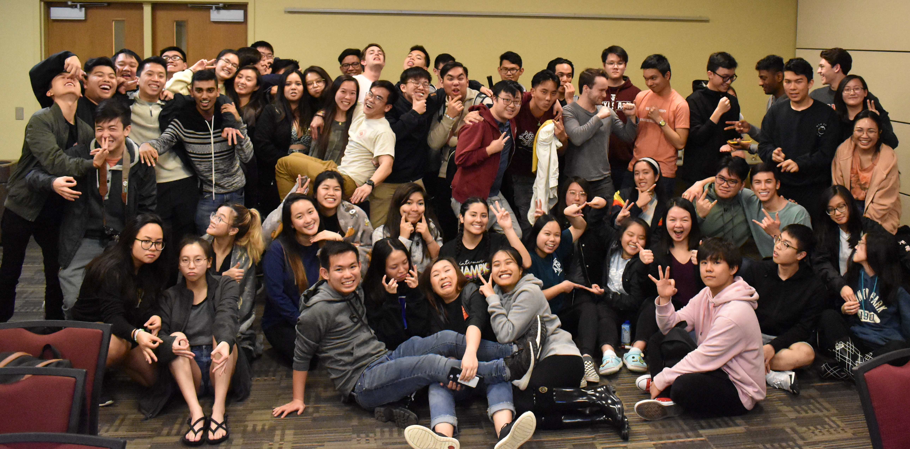

Vietnamese Student Association (VSA)
The Texas A&M Vietnamese Student Assocation, or TAMU VSA, is a socio-cultural organization
that focuses on promoting Vietnamese culture and heritage both on and off campus. It educates its members about its food, history, and lifestyles through general meetings, culture lessons, and even social events that
members could attend. Members even get the opportunity to travel to other universities around Texas to interact with new people and learn more about
Vietnamese culture. I was the Social Chair during the 2019-2020 school year and was in charge of hosting social events and icebreakers during our general
meetings to get members to socialize with each other. I have been involved with VSA since 2018.